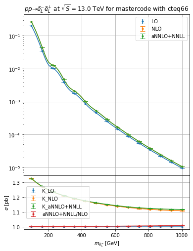

Resummino example
[4]:
import hepi
print(hepi.__version__)
import smpl
import numpy as np
import hepi.util as util
import matplotlib.pyplot as plt
import hepi.resummino as rs
rs.set_path("~/git/resummino_release/")
print (rs.get_path())
0.1.6.20+dirty
~/git/resummino_release/
aNNLO+NNLL for weakino pair, slepton pair, Z’/W’->leptons,
[5]:
%%time
params = [
"mastercode_with_gm2.in",
]
pss = [
(1000011,-1000011),
]
for pa,pb in pss:
for param in params:
i = hepi.Input(hepi.Order.aNNLO_PLUS_NNLL,13000,pa,pb,param,"cteq6l1","cteq66",1., 1.)
li = [i]
li = hepi.mass_scan([i],pa, np.linspace(100,1000,7+8))
rs_dl = rs.run(li,skip=True)
_,axs = hepi.init_double_plot()
hepi.mass_plot(rs_dl,["LO","NLO","aNNLO_PLUS_NNLL"],pa, yaxis=None,axes=axs[0],tight=False)
hepi.mass_plot(rs_dl,["K_LO","K_NLO","K_aNNLO_PLUS_NNLL","aNNLO_PLUS_NNLL_OVER_NLO"],pa, axes=axs[1],logy=False,tight=False)
hepi.title(axs[0],li[0],scenario="mastercode")
Running: 15 jobs
skipskipskipskipskipskipskipskipskipskipskipskipskipskipskipCPU times: user 885 ms, sys: 139 ms, total: 1.02 s
Wall time: 1.09 s

NLO+NLL for squark/gluino+weakino
[3]:
%%time
params = [
"mastercode_with_gm2.in",
]
pss = [
(1000022,1000021),
]
for pa,pb in pss:
for param in params:
i = hepi.Input(hepi.Order.NLO_PLUS_NLL,13000,pa,pb,param,"cteq6l1","cteq66",1., 1.)
li = [i]
li = hepi.mass_scan([i],pa, np.linspace(100,1000,7+8))
rs_dl = rs.run(li,skip=True)
_,axs = hepi.init_double_plot()
hepi.mass_plot(rs_dl,["LO","NLO","NLO_PLUS_NLL"],pa, yaxis=None,axes=axs[0],tight=False)
hepi.mass_plot(rs_dl,["LO","K_NLO","K_NLO_PLUS_NLL","NLO_PLUS_NLL_OVER_NLO"],pa, axes=axs[1],logy=False,tight=False)
hepi.title(axs[0],li[0],scenario="mastercode")
Running: 15 jobs
Performing PDF fit with 5 flavors with M^2/S = 0.142144, Q^2 = 6.00557e+06
and weights: valence: x^-1.6, sea: x^-1.6, gluon: x^-1.6 and xmin = 0.142144
Fit function: f = A0 * x^A1 * (1 - x)^A2 * ( 1 + A3 * x^(1/2) + A4 * x + A5 * x^(3/2) + A6 * x^2 + A7 * x^(5/2) )
Fitting gluon PDF... done.
Fit result:
A0 = 1.20639 # +-702060624.35128
A1 = -1.53459 # +-26549672.28403
A2 = 3.66612 # +-268922665.76974
A3 = -4.81910 # +-684093874.60669
A4 = 11.42334 # +-10998538433.66352
A5 = -15.59906 # +-28681905163.73969
A6 = 11.66132 # +-16688474761.59600
A7 = -3.68504 # +-1472507421.72506
Fitting valence down quark PDF... done.
Fit result:
A0 = 4.24462 # +-9244937020.67177
A1 = -0.34382 # +-44285298.28479
A2 = 3.88306 # +-42302897133.24701
A3 = -4.08900 # +-1125364429.96706
A4 = 10.63164 # +-31936340165.78497
A5 = -16.83906 # +-462385853593.72882
A6 = 13.30728 # +-914221792662.80396
A7 = -3.99462 # +-188238811456.34479
Fitting valence up quark PDF... done.
Fit result:
A0 = 7.31779 # +-3444604063.16287
A1 = -0.34312 # +-3417295.77160
A2 = 2.77743 # +-137744048.37980
A3 = -3.46715 # +-80578507.18525
A4 = 7.87982 # +-368583047.43457
A5 = -11.94757 # +-43517680.20738
A6 = 9.27527 # +-667505177.37620
A7 = -2.73951 # +-160776007.86797
Fitting sea down quark PDF... done.
Fit result:
A0 = 1.38800 # +-662488251779.29614
A1 = -0.60947 # +-9534123859.47612
A2 = 2.87785 # +-187655800.24168
A3 = -2.43158 # +-4675662980655.78223
A4 = -4.55384 # +-129926584155437.79688
A5 = 20.46286 # +-507548059491856.06250
A6 = -22.96111 # +-390185756906509.75000
A7 = 8.51019 # +-41930605729168.70312
Fitting strange quark PDF... done.
Fit result:
A0 = 0.27388 # +-2692901.12653
A1 = -1.28103 # +-4222841.22477
A2 = 0.80249 # +-1266810415.25080
A3 = -5.60830 # +-57984036.02377
A4 = 12.81622 # +-1116229982.27816
A5 = -14.86356 # +-3213693415.92340
A6 = 8.71578 # +-1926721193.92304
A7 = -2.06022 # +-169307826.38056
Fitting bottom quark PDF... done.
Fit result:
A0 = -0.00148 # +-5606251.13662
A1 = -2.77940 # +-1384929657550.83276
A2 = 5.59956 # +-85666967407.91449
A3 = -11.33335 # +-21683861457970.95312
A4 = 40.98227 # +-37179240424735.06250
A5 = -89.28132 # +-1002675277030186.12500
A6 = 104.57642 # +-5415476328792105.00000
A7 = -54.98101 # +-2557632802859699.50000
Fitting sea up quark PDF... done.
Fit result:
A0 = -0.00000 # +-198658262857.75827
A1 = -0.43134 # +-1005300124.15286
A2 = 7.62207 # +-617479123.31685
A3 = -4670621.88299 # +-194725231386671079965927216204742656.00000
A4 = 29415497.53119 # +-7723709359944688303725320858291404800.00000
A5 = -71568095.05441 # +-45720680984215249567239628434977062912.00000
A6 = 77876852.61038 # +-54136563429059093688355105545077653504.00000
A7 = -31733605.90146 # +-8989029896492295062315588361113305088.00000
Fitting charm quark PDF... done.
Fit result:
A0 = 0.18110 # +-1946440849.57300
A1 = -1.31775 # +-4122626599.37297
A2 = 4.54170 # +-33504222904.61065
A3 = -6.02789 # +-34481986226.47044
A4 = 16.34901 # +-734483102226.70276
A5 = -23.88253 # +-2494614091611.60693
A6 = 18.51094 # +-1767242881915.25708
A7 = -5.99116 # +-175440025782.63754
Performing PDF fit with 5 flavors with M^2/S = 0.134784, Q^2 = 5.69462e+06
and weights: valence: x^-1.6, sea: x^-1.6, gluon: x^-1.6 and xmin = 0.134784
Fit function: f = A0 * x^A1 * (1 - x)^A2 * ( 1 + A3 * x^(1/2) + A4 * x + A5 * x^(3/2) + A6 * x^2 + A7 * x^(5/2) )
Fitting gluon PDF...Performing PDF fit with 5 flavors with M^2/S = 0.10092, Q^2 = 4.26386e+06
and weights: valence: x^-1.6, sea: x^-1.6, gluon: x^-1.6 and xmin = 0.10092
Fit function: f = A0 * x^A1 * (1 - x)^A2 * ( 1 + A3 * x^(1/2) + A4 * x + A5 * x^(3/2) + A6 * x^2 + A7 * x^(5/2) )
Fitting gluon PDF... done.
Fit result:
A0 = 0.67018 # +-5246206.06733
A1 = -1.65804 # +-444637.72326
A2 = 1.05805 # +-66615414.46520
A3 = -3.87963 # +-62902081.95089
A4 = 5.87249 # +-888596872.00247
A5 = -4.21889 # +-1970943503.28569
A6 = 1.32080 # +-980644900.59228
A7 = -0.09418 # +-77527121.70000
Fitting valence down quark PDF... done.
Fit result:
A0 = 4.21985 # +-819133160.18674
A1 = -0.34477 # +-3027588.70468
A2 = 3.79994 # +-3252959721.53213
A3 = -4.09498 # +-64270951.67348
A4 = 10.70730 # +-1209008729.06855
A5 = -17.12007 # +-23752481923.49548
A6 = 13.66539 # +-54684825985.87606
A7 = -4.14458 # +-12030343217.36676
Fitting valence up quark PDF... done.
Fit result:
A0 = 4.34401 # +-3369368518.02619
A1 = -0.44127 # +-6083335.30932
A2 = 3.70206 # +-16947285.50715
A3 = -2.22542 # +-1096652031.18501
A4 = 4.52944 # +-8290938708.38723
A5 = -5.86820 # +-21582041424.80259
A6 = 2.86913 # +-19862271556.02154
A7 = -0.18548 # +-3008212477.92347
Fitting sea down quark PDF... done.
Fit result:
A0 = 0.62204 # +-7175700445.49436
A1 = -0.89122 # +-475347094.08255
A2 = 1.80056 # +-16595634.39016
A3 = -1.99742 # +-296632958887.43616
A4 = -6.55641 # +-8033851898394.40918
A5 = 23.78872 # +-30495199740071.10156
A6 = -25.28186 # +-22726356704426.71875
A7 = 9.06578 # +-2362833624590.60059
Fitting strange quark PDF... done.
Fit result:
A0 = 0.13699 # +-60007483.71025
A1 = -1.42275 # +-120270309.76528
A2 = 2.29776 # +-3778815306.12046
A3 = -4.10524 # +-17637535714.32787
A4 = 5.91070 # +-366497428241.26288
A5 = -2.59009 # +-1147008929815.82910
A6 = -1.20404 # +-743096823865.15234
A7 = 0.99181 # +-69579871951.66164
Fitting bottom quark PDF... done.
Fit result:
A0 = 1.34325 # +-501503835.40527
A1 = -1.50889 # +-15229493.63171
A2 = 3.71850 # +-224774110.91515
A3 = -4.93453 # +-383300214.78473
A4 = 11.86689 # +-6620345547.87244
A5 = -16.28130 # +-18475950498.97592
A6 = 12.14979 # +-11502066741.90915
A7 = -3.81804 # +-1083788660.30565
Fitting valence down quark PDF... done.
Fit result:
A0 = 4.32613 # +-4949495429.97949
A1 = -0.33885 # +-24411901.87688
A2 = 3.89009 # +-35995047996.63844
A3 = -4.10047 # +-1237989636.48409
A4 = 10.63337 # +-28674205089.75312
A5 = -16.77511 # +-379871963484.56390
A6 = 13.21894 # +-747458042306.70679
A7 = -3.96035 # +-155054357182.49445
Fitting valence up quark PDF... done.
Fit result:
A0 = -0.00142 # +-363140.90650
A1 = -2.42989 # +-130958941252.55901
A2 = 5.62565 # +-38031144342.28274
A3 = -16.51797 # +-72220528870354.73438
A4 = 56.91472 # +-1618608017644562.75000
A5 = -109.60812 # +-5945954295388392.00000
A6 = 115.80512 # +-4852190416986976.00000
A7 = -58.04092 # +-574366661283276.75000
Fitting sea up quark PDF... done.
Fit result:
A0 = 7.15981 # +-2371375635.96233
A1 = -0.34813 # +-2405626.09368
A2 = 2.75178 # +-112920069.37558
A3 = -3.44390 # +-61206185.05016
A4 = 7.84313 # +-293894583.35369
A5 = -11.98328 # +-34615057.46856
A6 = 9.36051 # +-532300419.24699
A7 = -2.77581 # +-132164616.99022
Fitting sea down quark PDF... done.
Fit result:
A0 = 1.19243 # +-292968597989.45123
A1 = -0.66527 # +-5642344558.91785
A2 = 2.67512 # +-121527049.42225
A3 = -2.36707 # +-2872658352147.68652
A4 = -4.85309 # +-79512769855127.82812
A5 = 20.96399 # +-309265575725207.25000
A6 = -23.31519 # +-236649440397516.65625
A7 = 8.59664 # +-25306238735254.26562
Fitting strange quark PDF... done.
Fit result:
A0 = 0.27163 # +-1783270.69137
A1 = -1.28404 # +-2752357.50871
A2 = 0.76798 # +-1022328667.24094
A3 = -5.60895 # +-50725116.28463
A4 = 12.81671 # +-977908371.10079
A5 = -14.86122 # +-2813943832.63866
A6 = 8.71227 # +-1683763786.50343
A7 = -2.05888 # +-147542691.48520
Fitting bottom quark PDF...Performing PDF fit with 5 flavors with M^2/S = 0.120651, Q^2 = 5.09752e+06
and weights: valence: x^-1.6, sea: x^-1.6, gluon: x^-1.6 and xmin = 0.120651
Fit function: f = A0 * x^A1 * (1 - x)^A2 * ( 1 + A3 * x^(1/2) + A4 * x + A5 * x^(3/2) + A6 * x^2 + A7 * x^(5/2) )
Fitting gluon PDF... done.
Fit result:
A0 = 1.33392 # +-218051021.55538
A1 = -1.51080 # +-6329763.36777
A2 = 3.69658 # +-157925984.96105
A3 = -4.91977 # +-194682597.84311
A4 = 11.80537 # +-3664718877.16462
A5 = -16.18111 # +-11057696144.19761
A6 = 12.07516 # +-7445076875.64641
A7 = -3.79707 # +-759491271.66643
Fitting valence down quark PDF...Performing PDF fit with 5 flavors with M^2/S = 0.12762, Q^2 = 5.39194e+06
and weights: valence: x^-1.6, sea: x^-1.6, gluon: x^-1.6 and xmin = 0.12762
Fit function: f = A0 * x^A1 * (1 - x)^A2 * ( 1 + A3 * x^(1/2) + A4 * x + A5 * x^(3/2) + A6 * x^2 + A7 * x^(5/2) )
Fitting gluon PDF...Performing PDF fit with 5 flavors with M^2/S = 0.104086, Q^2 = 4.39764e+06
and weights: valence: x^-1.6, sea: x^-1.6, gluon: x^-1.6 and xmin = 0.104086
Fit function: f = A0 * x^A1 * (1 - x)^A2 * ( 1 + A3 * x^(1/2) + A4 * x + A5 * x^(3/2) + A6 * x^2 + A7 * x^(5/2) )
Fitting gluon PDF... done.
Fit result:
A0 = 0.34011 # +-64122379.67891
A1 = -1.79231 # +-18373939.51759
A2 = 1.38168 # +-61320047.68627
A3 = -2.31208 # +-4628073170.19697
A4 = -0.31595 # +-71049992834.37181
A5 = 5.31583 # +-166846442446.56094
A6 = -5.49598 # +-84772388993.22758
A7 = 1.81016 # +-6604420481.96470
Fitting valence down quark PDF... done.
Fit result:
A0 = 0.63467 # +-6450586.48014
A1 = -1.66924 # +-612398.96956
A2 = 1.11527 # +-64978707.19435
A3 = -3.77043 # +-85574765.83645
A4 = 5.44347 # +-1233528632.27163
A5 = -3.55944 # +-2791523960.70656
A6 = 0.84893 # +-1411465291.41003
A7 = 0.03818 # +-112670153.59776
Fitting valence down quark PDF... done.
Fit result:
A0 = 4.39692 # +-2537478442.14297
A1 = -0.33466 # +-13034327.50355
A2 = 3.89651 # +-30879383722.64828
A3 = -4.11103 # +-1328276253.87668
A4 = 10.64029 # +-26416457123.99702
A5 = -16.73092 # +-320672123181.33270
A6 = 13.15118 # +-625118814391.66101
A7 = -3.93298 # +-130265689872.05547
Fitting valence up quark PDF... done.
Fit result:
A0 = -0.00987 # +-3961.63111
A1 = -4.78121 # +-26118922.89910
A2 = 8.36636 # +-30350827.46402
A3 = -14.04376 # +-4449144.67961
A4 = 79.13975 # +-571348352.67568
A5 = -224.13363 # +-10397378228.49435
A6 = 320.24569 # +-38002888385.73756
A7 = -186.76869 # +-21360563859.47148
Fitting charm quark PDF... done.
Fit result:
A0 = 4.37471 # +-1666326669.57200
A1 = -0.33592 # +-8344685.39755
A2 = 3.88726 # +-22310518618.66117
A3 = -4.10935 # +-964901016.37741
A4 = 10.65386 # +-18437765862.46499
A5 = -16.78548 # +-225757180581.90750
A6 = 13.21308 # +-444981184016.84863
A7 = -3.95578 # +-93316000757.84415
Fitting valence up quark PDF... done.
Fit result:
A0 = 4.27402 # +-827497710.49621
A1 = -0.34164 # +-3331730.09935
A2 = 3.83346 # +-5746079846.46096
A3 = -4.10033 # +-166270529.94446
A4 = 10.69428 # +-3131107623.92452
A5 = -17.00947 # +-48188221280.21503
A6 = 13.50427 # +-103557244314.46658
A7 = -4.07434 # +-22374112735.29279
Fitting valence up quark PDF... done.
Fit result:
A0 = -0.00169 # +-1170595.01525
A1 = -2.45948 # +-1114929131858.84448
A2 = 5.65099 # +-99736207264.85530
A3 = -14.90715 # +-461007929748468.37500
A4 = 52.17816 # +-7751511640617201.00000
A5 = -102.00698 # +-23348615444134240.00000
A6 = 108.41007 # +-15961722787097442.00000
A7 = -53.61609 # +-1781776395444919.75000
Fitting sea up quark PDF... done.
Fit result:
A0 = 7.05171 # +-1653794414.46120
A1 = -0.35154 # +-1695316.78204
A2 = 2.73124 # +-94281328.38860
A3 = -3.42720 # +-46217019.60109
A4 = 7.81735 # +-235055644.89374
A5 = -12.01261 # +-28544851.87925
A6 = 9.42707 # +-422429434.63980
A7 = -2.80410 # +-108387790.48083
Fitting sea down quark PDF... done.
Fit result:
A0 = 1.03373 # +-133560135140.21777
A1 = -0.71672 # +-3379562512.45025
A2 = 2.48389 # +-79866771.66947
A3 = -2.29957 # +-1788242641027.99854
A4 = -5.16574 # +-49297357399816.57031
A5 = 21.48642 # +-190882058446675.37500
A6 = -23.68304 # +-145357005464547.71875
A7 = 8.68596 # +-15464210539818.04688
Fitting strange quark PDF... done.
Fit result:
A0 = 0.26900 # +-1180297.34588
A1 = -1.28752 # +-1785851.40048
A2 = 0.72543 # +-804814387.30909
A3 = -5.61018 # +-42714952.69193
A4 = 12.81910 # +-824702956.14051
A5 = -14.86113 # +-2371540286.70679
A6 = 8.70986 # +-1415857293.00850
A7 = -2.05773 # +-123662038.10189
Fitting bottom quark PDF... done.
Fit result:
A0 = 4.90809 # +-295281633563143.81250
A1 = -0.29254 # +-336658127696.20929
A2 = 7.39982 # +-4721977333.09973
A3 = -3.45111 # +-167090234164371.68750
A4 = -2.46857 # +-6577850721931047.00000
A5 = 26.45594 # +-38822675937925448.00000
A6 = -40.04428 # +-45894727354128856.00000
A7 = 19.04747 # +-7602993407707350.00000
Fitting charm quark PDF... done.
Fit result:
A0 = 4.52069 # +-3792785483.98147
A1 = -0.43383 # +-6450536.93272
A2 = 3.69553 # +-18938605.35807
A3 = -2.31927 # +-1080523731.95969
A4 = 4.77548 # +-8166847116.12351
A5 = -6.24784 # +-21063383767.93995
A6 = 3.23184 # +-19219039225.40825
A7 = -0.32812 # +-2896046114.97765
Fitting sea down quark PDF... done.
Fit result:
A0 = 0.66007 # +-10190253196.36709
A1 = -0.87153 # +-603659784.81009
A2 = 1.88049 # +-20049026.97495
A3 = -2.03818 # +-368675519755.92175
A4 = -6.36992 # +-10008769642467.89453
A5 = 23.48257 # +-38093538148279.23438
A6 = -25.07188 # +-28471943614352.00000
A7 = 9.01690 # +-2969438871128.36719
Fitting strange quark PDF... done.
Fit result:
A0 = 5.20458 # +-7269351863.17183
A1 = -0.40697 # +-10157575.30365
A2 = 3.67161 # +-30725049.44138
A3 = -2.63003 # +-1253230602.90327
A4 = 5.58156 # +-9233837844.15755
A5 = -7.46887 # +-22499296653.10953
A6 = 4.38772 # +-19792616445.26697
A7 = -0.78183 # +-2935797844.66017
Fitting sea down quark PDF... done.
Fit result:
A0 = 0.13115 # +-76419807.12303
A1 = -1.43157 # +-166653821.19256
A2 = 2.32522 # +-4055695105.91602
A3 = -4.01074 # +-24959772559.76839
A4 = 5.47595 # +-519763612754.44226
A5 = -1.81545 # +-1628949341749.38940
A6 = -1.83138 # +-1056197165869.32629
A7 = 1.18492 # +-98942341042.20357
Fitting bottom quark PDF... done.
Fit result:
A0 = 0.16470 # +-1198514613.88380
A1 = -1.34364 # +-2905219103.43554
A2 = 4.49076 # +-28142186922.18334
A3 = -5.96419 # +-30833622475.88711
A4 = 16.08033 # +-675921537096.14941
A5 = -23.43747 # +-2365949015693.53906
A6 = 18.18919 # +-1735882239126.84497
A7 = -5.91162 # +-179460369612.55646
done.
Fit result:
A0 = -0.00123 # +-1486200.42360
A1 = -2.25791 # +-154286511211.92456
A2 = 5.69082 # +-48010264548.85862
A3 = -25.90176 # +-1727434163963762.50000
A4 = 97.40217 # +-33006708258563876.00000
A5 = -188.14638 # +-133119379635588208.00000
A6 = 191.46205 # +-134546416883660272.00000
A7 = -89.58398 # +-25874701252301888.00000
Fitting sea up quark PDF...Performing PDF fit with 5 flavors with M^2/S = 0.107301, Q^2 = 4.53349e+06
and weights: valence: x^-1.6, sea: x^-1.6, gluon: x^-1.6 and xmin = 0.107301
Fit function: f = A0 * x^A1 * (1 - x)^A2 * ( 1 + A3 * x^(1/2) + A4 * x + A5 * x^(3/2) + A6 * x^2 + A7 * x^(5/2) )
Fitting gluon PDF... done.
Fit result:
A0 = 1.25634 # +-89618127.14347
A1 = -1.52469 # +-2736493.50503
A2 = 3.62659 # +-111579703.53622
A3 = -4.83641 # +-108528996.51061
A4 = 11.45259 # +-2202384150.38222
A5 = -15.58613 # +-7084165559.09992
A6 = 11.60522 # +-5079450991.12183
A7 = -3.65369 # +-552967119.00986
Fitting valence down quark PDF... done.
Fit result:
A0 = 4.31526 # +-851563466.43089
A1 = -0.33928 # +-3710660.71753
A2 = 3.85573 # +-9011716656.83899
A3 = -4.10445 # +-333873305.47128
A4 = 10.68344 # +-6107400337.83596
A5 = -16.92835 # +-82285469028.34207
A6 = 13.39080 # +-169703400047.50909
A7 = -4.02615 # +-36243081674.89472
Fitting valence up quark PDF...Performing PDF fit with 5 flavors with M^2/S = 0.117241, Q^2 = 4.95342e+06
and weights: valence: x^-1.6, sea: x^-1.6, gluon: x^-1.6 and xmin = 0.117241
Fit function: f = A0 * x^A1 * (1 - x)^A2 * ( 1 + A3 * x^(1/2) + A4 * x + A5 * x^(3/2) + A6 * x^2 + A7 * x^(5/2) )
Fitting gluon PDF... done.
Fit result:
A0 = 4.69315 # +-4280435971.09928
A1 = -0.42677 # +-6886822.50146
A2 = 3.68917 # +-21131797.48199
A3 = -2.40499 # +-1074781362.70386
A4 = 4.99959 # +-8112260799.98491
A5 = -6.59115 # +-20722240168.31796
A6 = 3.55829 # +-18752010926.71669
A7 = -0.45629 # +-2812417456.19271
Fitting sea down quark PDF... done.
Fit result:
A0 = 0.70111 # +-14523933336.82618
A1 = -0.85133 # +-767835257.43650
A2 = 1.96176 # +-24264814.83467
A3 = -2.07806 # +-459065318638.71191
A4 = -6.18708 # +-12491668922148.25000
A5 = 23.18151 # +-47668101204363.97656
A6 = -24.86451 # +-35729875964367.00000
A7 = 8.96829 # +-3737751677562.64893
Fitting strange quark PDF... done.
Fit result:
A0 = 0.12745 # +-95696884.35455
A1 = -1.43740 # +-221209941.10119
A2 = 2.34177 # +-4348019167.86702
A3 = -3.94886 # +-33375832077.21353
A4 = 5.19133 # +-696562856211.40076
A5 = -1.30846 # +-2186416045034.67407
A6 = -2.24189 # +-1419235425577.24194
A7 = 1.31127 # +-133071920480.73090
Fitting bottom quark PDF... done.
Fit result:
A0 = 1.23191 # +-166330461.72498
A1 = -1.52936 # +-5477517.52692
A2 = 3.63503 # +-144575552.52886
A3 = -4.82227 # +-194631670.51847
A4 = 11.40824 # +-3679424834.63370
A5 = -15.53324 # +-11155193530.51843
A6 = 11.57969 # +-7565078267.16062
A7 = -3.65096 # +-781010949.85675
Fitting valence down quark PDF... done.
Fit result:
A0 = 4.36933 # +-1333808861.65538
A1 = -0.33622 # +-6566347.57456
A2 = 3.88322 # +-18962558481.25160
A3 = -4.10930 # +-831520114.84785
A4 = 10.66049 # +-15493214576.03262
A5 = -16.80776 # +-189494154576.65582
A6 = 13.23755 # +-375132517777.97498
A7 = -3.96476 # +-78905089419.56444
Fitting valence up quark PDF...Performing PDF fit with 5 flavors with M^2/S = 0.124111, Q^2 = 5.2437e+06
and weights: valence: x^-1.6, sea: x^-1.6, gluon: x^-1.6 and xmin = 0.124111
Fit function: f = A0 * x^A1 * (1 - x)^A2 * ( 1 + A3 * x^(1/2) + A4 * x + A5 * x^(3/2) + A6 * x^2 + A7 * x^(5/2) )
Fitting gluon PDF... done.
Fit result:
A0 = 5.06410 # +-6374227623.43593
A1 = -0.41229 # +-9249040.88775
A2 = 3.67636 # +-27882693.45824
A3 = -2.57268 # +-1212604745.90933
A4 = 5.43443 # +-8987164162.03094
A5 = -7.25010 # +-22160784686.81456
A6 = 4.18247 # +-19639519082.43780
A7 = -0.70138 # +-2921874766.67406
Fitting sea down quark PDF... done.
Fit result:
A0 = 4.53364 # +-5196162.95599
A1 = -0.45182 # +-30988.49972
A2 = 0.72264 # +-1789690.47048
A3 = -6.26227 # +-45001.36009
A4 = 15.64728 # +-1173256.91956
A5 = -19.48430 # +-4282581.97861
A6 = 12.08460 # +-3066305.08981
A7 = -2.98550 # +-306060.74014
Fitting strange quark PDF... done.
Fit result:
A0 = 1.34247 # +-270032761.25336
A1 = -1.50929 # +-7861622.56335
A2 = 3.70668 # +-172549827.71356
A3 = -4.92954 # +-228825401.08966
A4 = 11.84706 # +-4219435036.50561
A5 = -16.25162 # +-12501337940.18059
A6 = 12.13073 # +-8265970552.10195
A7 = -3.81392 # +-827853765.35273
Fitting valence down quark PDF... done.
Fit result:
A0 = 4.39175 # +-2014932812.97131
A1 = -0.33495 # +-10290370.02669
A2 = 3.89317 # +-26759159769.44230
A3 = -4.11099 # +-1173600952.69348
A4 = 10.64678 # +-22726713625.70224
A5 = -16.75176 # +-274943962223.00964
A6 = 13.17326 # +-537903759730.01581
A7 = -3.94082 # +-112410193174.99202
Fitting valence up quark PDF... done.
Fit result:
A0 = 0.11518 # +-196567575.31702
A1 = -1.45795 # +-552557441.37504
A2 = 2.38519 # +-5225671444.31941
A3 = -3.72539 # +-88385223482.63004
A4 = 4.16246 # +-1855688586007.97363
A5 = 0.52524 # +-5848451764318.04590
A6 = -3.72693 # +-3807799037611.66553
A7 = 1.76840 # +-358002352176.18146
Fitting bottom quark PDF... done.
Fit result:
A0 = 6.97509 # +-1376193427.33736
A1 = -0.35400 # +-1426580.97537
A2 = 2.71697 # +-85349360.04706
A3 = -3.41492 # +-40418503.84576
A4 = 7.79651 # +-210441444.61234
A5 = -12.02909 # +-26316658.11702
A6 = 9.47149 # +-380264799.69064
A7 = -2.82360 # +-98935946.97452
Fitting sea down quark PDF... done.
Fit result:
A0 = 52.63611 # +-42901199626292.25000
A1 = 0.10279 # +-319784391.77279
A2 = 9.78399 # +-951192474024.89136
A3 = -7.76511 # +-193943482439.72034
A4 = 25.48598 # +-9407514975066.88281
A5 = -42.42503 # +-76363670602232.07812
A6 = 34.79919 # +-132419430837639.68750
A7 = -10.96937 # +-33292164496226.43359
Fitting strange quark PDF... done.
Fit result:
A0 = 0.11164 # +-304587020.60112
A1 = -1.46442 # +-916653886.38693
A2 = 2.39596 # +-5941779182.06555
A3 = -3.65828 # +-146613155394.13428
A4 = 3.85353 # +-3087777670839.99121
A5 = 1.07578 # +-9752815495204.01172
A6 = -4.17289 # +-6361235685728.29590
A7 = 1.90576 # +-599159144343.11694
Fitting bottom quark PDF... done.
Fit result:
A0 = -0.00126 # +-5186987.26132
A1 = -2.26660 # +-387802663319.59412
A2 = 5.69205 # +-71941605067.37842
A3 = -24.96363 # +-4257167320972044.00000
A4 = 93.43831 # +-77881467767753440.00000
A5 = -180.25876 # +-305157146158540416.00000
A6 = 183.46604 # +-302686722947403136.00000
A7 = -85.93418 # +-58419711182113184.00000
Fitting sea up quark PDF... done.
Fit result:
A0 = 10.09053 # +-1479590330.58863
A1 = -0.29387 # +-1547232.71537
A2 = 4.32347 # +-48701728.20643
A3 = -7.37206 # +-459027.44052
A4 = 22.26108 # +-14403117.29495
A5 = -33.83670 # +-72356158.70913
A6 = 25.64871 # +-77973822.50931
A7 = -7.72034 # +-12211498.56573
Fitting charm quark PDF... done.
Fit result:
A0 = -0.00154 # +-800238.78326
A1 = -2.45471 # +-618152995207.04785
A2 = 5.63976 # +-74847983382.45068
A3 = -15.45722 # +-294327025172868.37500
A4 = 53.60200 # +-5279219371144280.00000
A5 = -104.37414 # +-16537263394878002.00000
A6 = 111.13405 # +-11624521001877650.00000
A7 = -55.56571 # +-1263287457049503.25000
Fitting sea up quark PDF... done.
Fit result:
A0 = 3.00539 # +-56570293325694.42188
A1 = -0.46571 # +-167726768006.95123
A2 = 6.90768 # +-2938352789.46866
A3 = -3.30642 # +-89942252721410.12500
A4 = -3.17891 # +-3504347634469584.00000
A5 = 27.98271 # +-20617563471943712.00000
A6 = -41.59293 # +-24337013986374952.00000
A7 = 19.62124 # +-4018802001284139.50000
Fitting charm quark PDF...Performing PDF fit with 5 flavors with M^2/S = 0.131178, Q^2 = 5.54225e+06
and weights: valence: x^-1.6, sea: x^-1.6, gluon: x^-1.6 and xmin = 0.131178
Fit function: f = A0 * x^A1 * (1 - x)^A2 * ( 1 + A3 * x^(1/2) + A4 * x + A5 * x^(3/2) + A6 * x^2 + A7 * x^(5/2) )
Fitting gluon PDF... done.
Fit result:
A0 = 0.31396 # +-99026084.40893
A1 = -1.80707 # +-32285567.66839
A2 = 1.39143 # +-60453881.87468
A3 = -2.08628 # +-9177422268.86276
A4 = -1.20355 # +-140860173692.01007
A5 = 6.67304 # +-329669740329.92853
A6 = -6.45646 # +-166498390696.55502
A7 = 2.07542 # +-12874597601.60524
Fitting valence down quark PDF... done.
Fit result:
A0 = 4.36432 # +-3540839935.44692
A1 = -0.33658 # +-17845675.99259
A2 = 3.89366 # +-33401724833.55106
A3 = -4.10608 # +-1295295708.90879
A4 = 10.63624 # +-27589882412.93933
A5 = -16.74928 # +-349054441175.94879
A6 = 13.18065 # +-683663988064.44348
A7 = -3.94505 # +-142183070828.14114
Fitting valence up quark PDF... done.
Fit result:
A0 = 0.05108 # +-1861982125570.62207
A1 = -1.54096 # +-18347394930090.04688
A2 = 6.36234 # +-29578539062.34410
A3 = -2.26259 # +-10917636170781266.00000
A4 = -3.56916 # +-303063294863491776.00000
A5 = 22.52158 # +-1615444451920048128.00000
A6 = -33.97962 # +-2025506150495536640.00000
A7 = 18.76357 # +-440006982080365248.00000
done.
Fit result:
A0 = 7.10455 # +-1979277564.03232
A1 = -0.34988 # +-2018881.87153
A2 = 2.74154 # +-103138328.36044
A3 = -3.43546 # +-53179418.17967
A4 = 7.83022 # +-262794430.66003
A5 = -11.99822 # +-31219190.50954
A6 = 9.39407 # +-473612538.07604
A7 = -2.79002 # +-119569406.75389
Fitting sea down quark PDF... done.
Fit result:
A0 = 5.85154 # +-18646356.43551
A1 = -0.35567 # +-70842.30955
A2 = 1.04777 # +-3508647.39381
A3 = -6.30053 # +-78365.54269
A4 = 15.84560 # +-2072193.44239
A5 = -19.86684 # +-7683903.80134
A6 = 12.41019 # +-5596212.00639
A7 = -3.08870 # +-568788.70514
Fitting strange quark PDF... done.
Fit result:
A0 = 0.27049 # +-1453619.36741
A1 = -1.28556 # +-2220597.36081
A2 = 0.74912 # +-913996908.56601
A3 = -5.60948 # +-47041235.20501
A4 = 12.81771 # +-907625509.77347
A5 = -14.86111 # +-2611155705.42134
A6 = 8.71117 # +-1560913983.95950
A7 = -2.05837 # +-136580392.27377
Fitting bottom quark PDF... done.
Fit result:
A0 = -0.00080 # +-65402511.24669
A1 = -2.21416 # +-1152930272122.52563
A2 = 5.69872 # +-119620894841.06369
A3 = -39.38758 # +-180789092067405152.00000
A4 = 151.66317 # +-3079621149297991680.00000
A5 = -292.80470 # +-11856776855389329408.00000
A6 = 295.32608 # +-11918242334075416576.00000
A7 = -136.94587 # +-2456313824826118656.00000
Fitting sea up quark PDF... done.
Fit result:
A0 = 4.14173 # +-168406905238730.34375
A1 = -0.35328 # +-267393528678.21945
A2 = 7.23207 # +-4041612217.71029
A3 = -3.40430 # +-136134994100642.93750
A4 = -2.69986 # +-5341618555919742.00000
A5 = 26.95641 # +-31495801085151316.00000
A6 = -40.55287 # +-37214150593257568.00000
A7 = 19.23525 # +-6157860609330402.00000
Fitting charm quark PDF... done.
Fit result:
A0 = 0.05561 # +-3913936040358.61377
A1 = -1.51910 # +-33061771252704.05859
A2 = 6.38928 # +-50330611068.92439
A3 = -2.37160 # +-18707553878668140.00000
A4 = -3.17495 # +-525636347550134784.00000
A5 = 21.81291 # +-2810219258933194240.00000
A6 = -33.25616 # +-3516416756981644288.00000
A7 = 18.36012 # +-757206424030137984.00000
Performing PDF fit with 5 flavors with M^2/S = 0.113879, Q^2 = 4.81137e+06
and weights: valence: x^-1.6, sea: x^-1.6, gluon: x^-1.6 and xmin = 0.113879
Fit function: f = A0 * x^A1 * (1 - x)^A2 * ( 1 + A3 * x^(1/2) + A4 * x + A5 * x^(3/2) + A6 * x^2 + A7 * x^(5/2) )
Fitting gluon PDF... done.
Fit result:
A0 = 1.31771 # +-142735895.04798
A1 = -1.51387 # +-4118866.26670
A2 = 3.68104 # +-133137508.04601
A3 = -4.90272 # +-140546599.11924
A4 = 11.73782 # +-2754115320.03280
A5 = -16.07522 # +-8601524684.42912
A6 = 11.99887 # +-5989454298.85466
A7 = -3.77637 # +-631742279.24307
Fitting valence down quark PDF... done.
Fit result:
A0 = 4.35946 # +-1096466308.10730
A1 = -0.33677 # +-5253165.98666
A2 = 3.87759 # +-15695382231.18183
A3 = -4.10867 # +-683374197.51095
A4 = 10.66739 # +-12500457117.55791
A5 = -16.83587 # +-154187976167.46933
A6 = 13.27060 # +-307367400818.60449
A7 = -3.97739 # +-64880350365.36554
Fitting valence up quark PDF... done.
Fit result:
A0 = 4.96923 # +-5546428942.08440
A1 = -0.41590 # +-8236685.28581
A2 = 3.67936 # +-25684792.68373
A3 = -2.53177 # +-1136881549.06938
A4 = 5.32922 # +-8498310182.47657
A5 = -7.09179 # +-21229947139.71768
A6 = 4.03251 # +-18933853896.56854
A7 = -0.64236 # +-2821351580.45388
Fitting sea down quark PDF... done.
Fit result:
A0 = 0.79357 # +-29845976098.60060
A1 = -0.80924 # +-1248358692.47689
A2 = 2.12859 # +-35747673.59439
A3 = -2.15521 # +-715812693505.62769
A4 = -5.83237 # +-19565931931649.31641
A5 = 22.59514 # +-75042244944028.26562
A6 = -24.45821 # +-56558643040919.64844
A7 = 8.87211 # +-5951504646469.99219
Fitting strange quark PDF... done.
Fit result:
A0 = 0.12327 # +-145225735.05022
A1 = -1.44434 # +-361948623.09631
A2 = 2.35771 # +-4968242258.13304
A3 = -3.87981 # +-54058262824.21140
A4 = 4.87354 # +-1133047550056.62793
A5 = -0.74203 # +-3567507720563.16455
A6 = -2.70083 # +-2321442996437.01367
A7 = 1.45264 # +-218168131492.35831
Fitting bottom quark PDF... done.
Fit result:
A0 = -0.00145 # +-741823.32891
A1 = -2.31998 # +-298092121439.50854
A2 = 5.67567 # +-61529488885.02886
A3 = -20.45616 # +-895457656948073.12500
A4 = 74.53151 # +-17045267300752714.00000
A5 = -143.50649 # +-65872751846993800.00000
A6 = 147.42314 # +-62803968217960664.00000
A7 = -70.20576 # +-11145767781436702.00000
Fitting sea up quark PDF... done.
Fit result:
A0 = 1.94709 # +-12008324476061.22070
A1 = -0.61266 # +-82655181468.81192
A2 = 6.45250 # +-1798709684.32098
A3 = -3.14822 # +-48041129290256.35938
A4 = -3.94360 # +-1850017613606691.25000
A5 = 29.59370 # +-10840859985299122.00000
A6 = -43.21481 # +-12777462194162632.00000
A7 = 20.22750 # +-2104668959865520.25000
Fitting charm quark PDF...Performing PDF fit with 5 flavors with M^2/S = 0.0947339, Q^2 = 4.00251e+06
and weights: valence: x^-1.6, sea: x^-1.6, gluon: x^-1.6 and xmin = 0.0947339
Fit function: f = A0 * x^A1 * (1 - x)^A2 * ( 1 + A3 * x^(1/2) + A4 * x + A5 * x^(3/2) + A6 * x^2 + A7 * x^(5/2) )
Fitting gluon PDF... done.
Fit result:
A0 = 0.31940 # +-26693445081.88694
A1 = -1.75588 # +-5871993143.30024
A2 = 5.22294 # +-16958003.50873
A3 = -0.31728 # +-5616297226584.73828
A4 = -7.88510 # +-100732787389304.32812
A5 = 24.14803 # +-413683831123746.81250
A6 = -29.57261 # +-435131053399942.37500
A7 = 14.42513 # +-82647481973156.68750
Fitting valence down quark PDF... done.
Fit result:
A0 = 4.11880 # +-667229180.67379
A1 = -0.35061 # +-2258352.24090
A2 = 3.72867 # +-1250815705.51063
A3 = -4.08381 # +-21266580.37034
A4 = 10.72602 # +-205851903.09146
A5 = -17.32988 # +-6708640094.46388
A6 = 13.98488 # +-18158360459.34797
A7 = -4.28690 # +-4166165847.81338
Fitting valence up quark PDF... done.
Fit result:
A0 = 4.06996 # +-2620230528.07811
A1 = -0.45320 # +-5201380.06054
A2 = 3.71166 # +-13953273.06830
A3 = -2.06542 # +-1067251111.50982
A4 = 4.10955 # +-8104061082.69146
A5 = -5.21329 # +-21519395073.78424
A6 = 2.23767 # +-20109642613.05399
A7 = 0.06391 # +-3069537131.56564
Fitting sea down quark PDF... done.
Fit result:
A0 = 0.55397 # +-3596300050.60732
A1 = -0.92913 # +-296206479.09519
A2 = 1.64457 # +-11430011.65253
A3 = -1.91327 # +-193118317373.68863
A4 = -6.93998 # +-5204681578677.30371
A5 = 24.41535 # +-19646948716849.42969
A6 = -25.70857 # +-14553513728526.75195
A7 = 9.16392 # +-1503366907714.29028
Fitting strange quark PDF... done.
Fit result:
A0 = 0.14087 # +-40534506.10663
A1 = -1.41692 # +-75763890.04524
A2 = 2.27589 # +-3262195358.62605
A3 = -4.16170 # +-11448382989.01150
A4 = 6.16978 # +-236582537789.78653
A5 = -3.05117 # +-737351706675.14417
A6 = -0.83074 # +-476154387707.20581
A7 = 0.87688 # +-44462250682.34723
Fitting bottom quark PDF... done.
Fit result:
A0 = -0.00122 # +-689578.94348
A1 = -2.23973 # +-73808001879.12042
A2 = 5.70186 # +-35102236868.33260
A3 = -27.25368 # +-964474524316828.50000
A4 = 103.95492 # +-19222509659334980.00000
A5 = -202.05039 # +-80181050223545296.00000
A6 = 205.85318 # +-83207464261962928.00000
A7 = -95.79457 # +-16147253236101206.00000
Fitting sea up quark PDF... done.
Fit result:
A0 = -0.01193 # +-5535.94216
A1 = -4.44685 # +-24845807.41368
A2 = 8.62088 # +-29336278.38613
A3 = -14.35581 # +-5368652.08746
A4 = 82.66669 # +-722351713.05304
A5 = -239.12090 # +-13721144216.73136
A6 = 348.67063 # +-51583559338.60519
A7 = -207.89172 # +-30004618665.62924
Fitting charm quark PDF... done.
Fit result:
A0 = 0.12664 # +-83567119.55045
A1 = -1.40957 # +-265153833.98280
A2 = 4.30604 # +-10579765371.70145
A3 = -5.73334 # +-7640630178.31815
A4 = 15.03882 # +-205170737365.67078
A5 = -21.57010 # +-868604324749.67505
A6 = 16.68006 # +-782926424852.43896
A7 = -5.46490 # +-101097070416.39142
Performing PDF fit with 5 flavors with M^2/S = 0.110566, Q^2 = 4.6714e+06
and weights: valence: x^-1.6, sea: x^-1.6, gluon: x^-1.6 and xmin = 0.110566
Fit function: f = A0 * x^A1 * (1 - x)^A2 * ( 1 + A3 * x^(1/2) + A4 * x + A5 * x^(3/2) + A6 * x^2 + A7 * x^(5/2) )
Fitting gluon PDF... done.
Fit result:
A0 = 1.37383 # +-120113325.09490
A1 = -1.50426 # +-3176930.19059
A2 = 3.70961 # +-122906778.98498
A3 = -4.95076 # +-107407493.98712
A4 = 11.93628 # +-2170135301.46669
A5 = -16.40439 # +-6946357985.97298
A6 = 12.25576 # +-4943506957.25312
A7 = -3.85390 # +-530824673.80122
Fitting valence down quark PDF... done.
Fit result:
A0 = 4.34122 # +-943780695.51818
A1 = -0.33780 # +-4342563.52803
A2 = 3.86876 # +-12313590306.15841
A3 = -4.10699 # +-509514062.78831
A4 = 10.67491 # +-9261270362.75935
A5 = -16.87546 # +-117627796979.77629
A6 = 13.32060 # +-237501426117.90277
A7 = -3.99730 # +-50375766031.67002
Fitting valence up quark PDF... done.
Fit result:
A0 = 4.85942 # +-4843300256.93994
A1 = -0.42015 # +-7405846.68170
A2 = 3.68306 # +-23528871.41027
A3 = -2.48264 # +-1079771808.73275
A4 = 5.20198 # +-8128978893.40699
A5 = -6.89904 # +-20556487708.62658
A6 = 3.84979 # +-18454665371.75239
A7 = -0.57056 # +-2756009017.65946
Fitting sea down quark PDF... done.
Fit result:
A0 = 0.74552 # +-20783758599.50990
A1 = -0.83056 # +-978385863.54275
A2 = 2.04449 # +-29424740.43574
A3 = -2.11710 # +-572765320582.43738
A4 = -6.00772 # +-15621086572406.24219
A5 = 22.88538 # +-59762748841461.55469
A6 = -24.65968 # +-44920419622640.41406
A7 = 8.91994 # +-4713173681170.12695
Fitting strange quark PDF... done.
Fit result:
A0 = 0.13008 # +-111223651.57474
A1 = -1.43345 # +-251033868.79143
A2 = 2.33203 # +-4686034388.56271
A3 = -3.99787 # +-35951885586.39740
A4 = 5.41727 # +-752153730775.11267
A5 = -1.71135 # +-2365586352515.93555
A6 = -1.91566 # +-1538315582448.95166
A7 = 1.21092 # +-144505438840.82385
Fitting bottom quark PDF...Performing PDF fit with 5 flavors with M^2/S = 0.0978024, Q^2 = 4.13215e+06
and weights: valence: x^-1.6, sea: x^-1.6, gluon: x^-1.6 and xmin = 0.0978024
Fit function: f = A0 * x^A1 * (1 - x)^A2 * ( 1 + A3 * x^(1/2) + A4 * x + A5 * x^(3/2) + A6 * x^2 + A7 * x^(5/2) )
Fitting gluon PDF... done.
Fit result:
A0 = 0.68232 # +-4472600.25359
A1 = -1.65433 # +-361801.87275
A2 = 1.03829 # +-64501633.95934
A3 = -3.91242 # +-52789297.95676
A4 = 6.00096 # +-737196032.71520
A5 = -4.41524 # +-1618134214.73510
A6 = 1.46017 # +-799260227.84604
A7 = -0.13290 # +-62986937.29694
Fitting valence down quark PDF... done.
Fit result:
A0 = 4.16414 # +-762618224.82504
A1 = -0.34800 # +-2659840.32840
A2 = 3.76175 # +-1890717655.27712
A3 = -4.08913 # +-29557197.39205
A4 = 10.71863 # +-440949353.16139
A5 = -17.23574 # +-11715931770.86440
A6 = 13.83970 # +-29365725933.49950
A7 = -4.22192 # +-6602431744.73790
Fitting valence up quark PDF... done.
Fit result:
A0 = 4.15980 # +-3004488164.10243
A1 = -0.44927 # +-5793501.21573
A2 = 3.70886 # +-15126049.08201
A3 = -2.12042 # +-1128394965.36207
A4 = 4.25372 # +-8520490584.15877
A5 = -5.43993 # +-22375396731.41305
A6 = 2.45801 # +-20780529598.92421
A7 = -0.02348 # +-3165012477.61833
Fitting sea down quark PDF... done.
Fit result:
A0 = 0.58672 # +-5069240683.86341
A1 = -0.91043 # +-374840623.59333
A2 = 1.72184 # +-13759253.15872
A3 = -1.95573 # +-239070598006.34586
A4 = -6.74667 # +-6459133978812.33105
A5 = 24.10007 # +-24450672565330.23047
A6 = -25.49440 # +-18167285514274.35156
A7 = 9.11486 # +-1882803890897.04468
Fitting strange quark PDF... done.
Fit result:
A0 = 0.13644 # +-50575851.97292
A1 = -1.42341 # +-100958353.11608
A2 = 2.29998 # +-3522580994.41742
A3 = -4.09311 # +-15314768933.56689
A4 = 5.85466 # +-317253600569.07336
A5 = -2.49009 # +-990462866310.65295
A6 = -1.28497 # +-640314811358.74451
A7 = 1.01667 # +-59832667866.89417
Fitting bottom quark PDF... done.
Fit result:
A0 = -0.00141 # +-920109.58375
A1 = -2.29852 # +-234527209217.07443
A2 = 5.68280 # +-56277895197.77177
A3 = -21.76978 # +-1001943070692477.87500
A4 = 80.21519 # +-19250908883362848.00000
A5 = -154.67340 # +-75941401226505136.00000
A6 = 158.37051 # +-74205352893261200.00000
A7 = -74.88324 # +-13559630668699734.00000
Fitting sea up quark PDF... done.
Fit result:
A0 = 1.70580 # +-7339888828752.14062
A1 = -0.65617 # +-65251689382.28885
A2 = 6.30997 # +-1523929666.99744
A3 = -3.09253 # +-38981886036855.46094
A4 = -4.21053 # +-1494886329312760.00000
A5 = 30.14838 # +-8746169876902551.00000
A6 = -43.76907 # +-10302921820026376.00000
A7 = 20.43530 # +-1695850796012437.75000
Fitting charm quark PDF... done.
Fit result:
A0 = 0.04310 # +-530175179465.33502
A1 = -1.58045 # +-7032043845991.97168
A2 = 6.31023 # +-16339555396.81250
A3 = -1.95587 # +-4824124687845548.00000
A4 = -4.81202 # +-130573325781099152.00000
A5 = 24.91146 # +-689903232493750144.00000
A6 = -36.40659 # +-865558170154023296.00000
A7 = 19.97354 # +-190669187640564704.00000
done.
Fit result:
A0 = -0.00127 # +-696071.32161
A1 = -2.25297 # +-92894977557.46347
A2 = 5.69707 # +-38526369179.01037
A3 = -25.72931 # +-908081331693166.00000
A4 = 97.31979 # +-18029608654980308.00000
A5 = -188.72578 # +-74529036243812144.00000
A6 = 192.42520 # +-76526384873018320.00000
A7 = -89.85958 # +-14671321394120572.00000
Fitting sea up quark PDF... done.
Fit result:
A0 = 0.00004 # +-370991646798.19250
A1 = -0.55943 # +-1352190496.21885
A2 = 10.34611 # +-455831995.02060
A3 = 644173.67292 # +-87231212095534633075124836761600.00000
A4 = -4430283.87348 # +-4125947793477539078185307888156672.00000
A5 = 12564430.72610 # +-33185187630751706575534114599862272.00000
A6 = -16554724.94626 # +-57610484319217370482913158887374848.00000
A7 = 8325773.02905 # +-14571560432996098350716858191052800.00000
Fitting strange quark PDF... done.
Fit result:
A0 = -0.01089 # +-4725.49761
A1 = -4.60973 # +-25542100.76206
A2 = 8.49688 # +-29882326.52815
A3 = -14.19903 # +-4924863.94188
A4 = 80.88463 # +-646874124.66758
A5 = -231.50884 # +-12014671676.76902
A6 = 334.18314 # +-44524194060.29395
A7 = -197.08254 # +-25462212025.30371
Fitting charm quark PDF... done.
Fit result:
A0 = 0.11781 # +-228387517.53027
A1 = -1.45358 # +-624593711.05610
A2 = 2.37833 # +-5671046166.80551
A3 = -3.78100 # +-94540796480.05284
A4 = 4.41892 # +-1988166477053.46191
A5 = 0.06797 # +-6274203199636.99902
A6 = -3.35675 # +-4089865428160.27100
A7 = 1.65456 # +-384993631511.36316
Fitting bottom quark PDF... done.
Fit result:
A0 = 0.03733 # +-160066764582.11169
A1 = -1.61073 # +-2708977977229.71240
A2 = 6.26578 # +-9482052544.68059
A3 = -1.62278 # +-2156646286405933.75000
A4 = -6.22401 # +-57083080318967320.00000
A5 = 27.68613 # +-298676848248770304.00000
A6 = -39.20728 # +-373901151712065088.00000
A7 = 21.30734 # +-83125714555893520.00000
done.
Fit result:
A0 = -0.00152 # +-1729679.24323
A1 = -2.52104 # +-482446984638.37592
A2 = 5.62461 # +-62440027140.95965
A3 = -14.10202 # +-102130883466301.10938
A4 = 48.37391 # +-1836036025523201.50000
A5 = -95.86312 # +-4749669935680450.00000
A6 = 104.61725 # +-2240399040868671.75000
A7 = -53.54753 # +-71123697218959.04688
Fitting sea up quark PDF... done.
Fit result:
A0 = 11.48577 # +-2300789670.11546
A1 = -0.24824 # +-1899875.20627
A2 = 4.46359 # +-56650788.44001
A3 = -7.38452 # +-485200.68463
A4 = 22.31588 # +-15371061.24524
A5 = -33.93090 # +-78196206.85141
A6 = 25.72515 # +-85163271.91846
A7 = -7.74522 # +-13435497.64919
Fitting charm quark PDF... done.
Fit result:
A0 = -0.00001 # +-39878812.41112
A1 = -2.11288 # +-243835977647.21582
A2 = 5.74248 # +-61211092987.51338
A3 = -2460.71799 # +-1193952294490684990160896.00000
A4 = 10371.44971 # +-21260404040305624632786944.00000
A5 = -20688.46444 # +-84667725143717263968305152.00000
A6 = 20975.37204 # +-87052569945277299236536320.00000
A7 = -9520.60357 # +-17930081031846390466084864.00000
Fitting sea up quark PDF... done.
Fit result:
A0 = -0.00001 # +-170210159.09184
A1 = -2.15125 # +-1189663846161.68579
A2 = 5.70219 # +-121091733882.22702
A3 = -5783.68329 # +-211416047410287672207343616.00000
A4 = 23437.12658 # +-3474768323870621916100296704.00000
A5 = -45702.57511 # +-13216536871259048099455172608.00000
A6 = 45892.73367 # +-13327052195724752254226399232.00000
A7 = -21134.21707 # +-2825901508208181882237485056.00000
Fitting sea up quark PDF... done.
Fit result:
A0 = 3.51186 # +-96729917926353.84375
A1 = -0.41151 # +-211816151147.63715
A2 = 7.06648 # +-3450814101.79245
A3 = -3.35567 # +-110678628220132.48438
A4 = -2.93850 # +-4327693734485864.50000
A5 = 27.46934 # +-25490381747643096.00000
A6 = -41.07321 # +-30103391616164592.00000
A7 = 19.42803 # +-4975873365340340.00000
Fitting charm quark PDF... done.
Fit result:
A0 = 0.05084 # +-2920368216839.42432
A1 = -1.54221 # +-29065980121785.03906
A2 = 6.36244 # +-51155278787.88869
A3 = -2.25572 # +-17299696205445334.00000
A4 = -3.59592 # +-479771698437130496.00000
A5 = 22.57024 # +-2556297960974659072.00000
A6 = -34.02583 # +-3204795388557147136.00000
A7 = 18.78557 # +-696397415572618880.00000
done.
Fit result:
A0 = -0.00000 # +-55134464.83824
A1 = -1.89610 # +-20149081484.88355
A2 = 6.18929 # +-5346519922.84952
A3 = -427438.09574 # +-119899842168821648822516215447552.00000
A4 = 2192617.34889 # +-3155031859617409337491133894230016.00000
A5 = -5078929.54091 # +-16928733767003532800511762348638208.00000
A6 = 5786704.02318 # +-21975735942238255135561911107584000.00000
A7 = -2797189.45580 # +-5134815610622729759880962904162304.00000
done.
Fit result:
A0 = -0.00000 # +-231149449.00169
A1 = -1.86076 # +-51110867936.79800
A2 = 6.25128 # +-8378375424.16280
A3 = -383337.73464 # +-248485702543782030098660262412288.00000
A4 = 2002111.65295 # +-6778308345505952365115847389216768.00000
A5 = -4668979.38406 # +-36863019806618696234249997135118336.00000
A6 = 5320818.40661 # +-47874563711418572072307181504954368.00000
A7 = -2548945.02552 # +-10986752040270678104773393817534464.00000
Performing PDF fit with 5 flavors with M^2/S = 0.138439, Q^2 = 5.84907e+06
and weights: valence: x^-1.6, sea: x^-1.6, gluon: x^-1.6 and xmin = 0.138439
Fit function: f = A0 * x^A1 * (1 - x)^A2 * ( 1 + A3 * x^(1/2) + A4 * x + A5 * x^(3/2) + A6 * x^2 + A7 * x^(5/2) )
Fitting gluon PDF... done.
Fit result:
A0 = 1.15049 # +-556599190.96336
A1 = -1.54615 # +-22560245.68649
A2 = 3.64012 # +-246887898.13761
A3 = -4.76555 # +-644015990.98701
A4 = 11.22401 # +-10445236021.83603
A5 = -15.30449 # +-27500879991.04274
A6 = 11.46154 # +-16192629997.47868
A7 = -3.63470 # +-1450040569.10345
Fitting valence down quark PDF... done.
Fit result:
A0 = 4.29340 # +-6724889392.81413
A1 = -0.34083 # +-32659259.96061
A2 = 3.88757 # +-39287370130.47276
A3 = -4.09566 # +-1210618678.03776
A4 = 10.63084 # +-30543096594.22620
A5 = -16.79662 # +-420595401147.02911
A6 = 13.25074 # +-829311996772.82886
A7 = -3.97298 # +-171467589544.47324
Fitting valence up quark PDF... done.
Fit result:
A0 = 7.23078 # +-2852226235.61323
A1 = -0.34588 # +-2866749.07606
A2 = 2.76378 # +-124354772.15914
A3 = -3.45450 # +-70290570.41605
A4 = 7.85976 # +-328916121.85464
A5 = -11.96642 # +-38732924.60597
A6 = 9.32082 # +-596945724.12535
A7 = -2.75891 # +-145894188.96183
Fitting sea down quark PDF... done.
Fit result:
A0 = 1.28486 # +-438650703984.91486
A1 = -0.63798 # +-7321788319.18365
A2 = 2.77486 # +-150701778.35253
A3 = -2.39968 # +-3658077489003.05176
A4 = -4.70186 # +-101452513133640.71875
A5 = 20.71085 # +-395464590920709.06250
A6 = -23.13646 # +-303320137058391.56250
A7 = 8.55305 # +-32516434444964.55859
Fitting strange quark PDF... done.
Fit result:
A0 = 0.27221 # +-2171412.35413
A1 = -1.28323 # +-3391096.35563
A2 = 0.77949 # +-1115821541.64265
A3 = -5.60870 # +-52881976.33177
A4 = 12.81644 # +-1018438367.52159
A5 = -14.86187 # +-2930124956.46858
A6 = 8.71338 # +-1754107825.79739
A7 = -2.05933 # +-153836609.87149
Fitting bottom quark PDF... done.
Fit result:
A0 = -0.00168 # +-1115519.96814
A1 = -2.45576 # +-1429710592949.99341
A2 = 5.65177 # +-112015513288.76608
A3 = -15.01553 # +-662852019326469.12500
A4 = 52.54960 # +-10863774363839530.00000
A5 = -102.58804 # +-32797257815921828.00000
A6 = 108.86401 # +-22949777569631516.00000
A7 = -53.79148 # +-2777973503159644.50000
Fitting sea up quark PDF... done.
Fit result:
A0 = 5.84077 # +-520003140303136.62500
A1 = -0.22942 # +-422058721624.36627
A2 = 7.56896 # +-5501472464.97572
A3 = -3.49571 # +-204371434699659.00000
A4 = -2.24698 # +-8070440597062791.00000
A5 = 25.97348 # +-47673883766152112.00000
A6 = -39.55327 # +-56387433582743608.00000
A7 = 18.86682 # +-9352524726105520.00000
Fitting charm quark PDF... done.
Fit result:
A0 = 0.06267 # +-7309766971574.40234
A1 = -1.48813 # +-49776042868425.08594
A2 = 6.42441 # +-61489077500.11749
A3 = -2.52945 # +-26096052429107764.00000
A4 = -2.56342 # +-744469039169832448.00000
A5 = 20.64286 # +-3993233015216050176.00000
A6 = -32.02335 # +-4980974505583813632.00000
A7 = 17.70068 # +-1060062584830966400.00000
done.
Fit result:
A0 = -0.00000 # +-174043641.56273
A1 = -1.86714 # +-42221557219.50706
A2 = 6.24069 # +-7630611294.39664
A3 = -375334.25984 # +-180308619452005498360861867114496.00000
A4 = 1954695.17095 # +-4890404447863341009311848992866304.00000
A5 = -4554249.46625 # +-26547439498803153487674878508138496.00000
A6 = 5191011.71053 # +-34490062929007659762159844109320192.00000
A7 = -2490952.87193 # +-7941844766748132977863926185197568.00000
---------------------------------------------------------------------------
KeyboardInterrupt Traceback (most recent call last)
<timed exec> in <module>
~/.local/lib/python3.8/site-packages/hepi/run.py in run(self, params, skip, parse, parallel, sleep, run, **kwargs)
120 sleep = 0 if parse else 5
121 if run:
--> 122 self._run(rps,
123 wait=parse,
124 parallel=parallel,
~/.local/lib/python3.8/site-packages/hepi/run.py in _run(self, rps, wait, parallel, sleep, **kwargs)
170 if wait:
171 # Collect statuses
--> 172 output = [p.wait() for p in processes]
173 return output
174 return []
~/.local/lib/python3.8/site-packages/hepi/run.py in <listcomp>(.0)
170 if wait:
171 # Collect statuses
--> 172 output = [p.wait() for p in processes]
173 return output
174 return []
/usr/lib/python3.8/subprocess.py in wait(self, timeout)
1081 endtime = _time() + timeout
1082 try:
-> 1083 return self._wait(timeout=timeout)
1084 except KeyboardInterrupt:
1085 # https://bugs.python.org/issue25942
/usr/lib/python3.8/subprocess.py in _wait(self, timeout)
1804 if self.returncode is not None:
1805 break # Another thread waited.
-> 1806 (pid, sts) = self._try_wait(0)
1807 # Check the pid and loop as waitpid has been known to
1808 # return 0 even without WNOHANG in odd situations.
/usr/lib/python3.8/subprocess.py in _try_wait(self, wait_flags)
1762 """All callers to this function MUST hold self._waitpid_lock."""
1763 try:
-> 1764 (pid, sts) = os.waitpid(self.pid, wait_flags)
1765 except ChildProcessError:
1766 # This happens if SIGCLD is set to be ignored or waiting
KeyboardInterrupt:
[ ]: